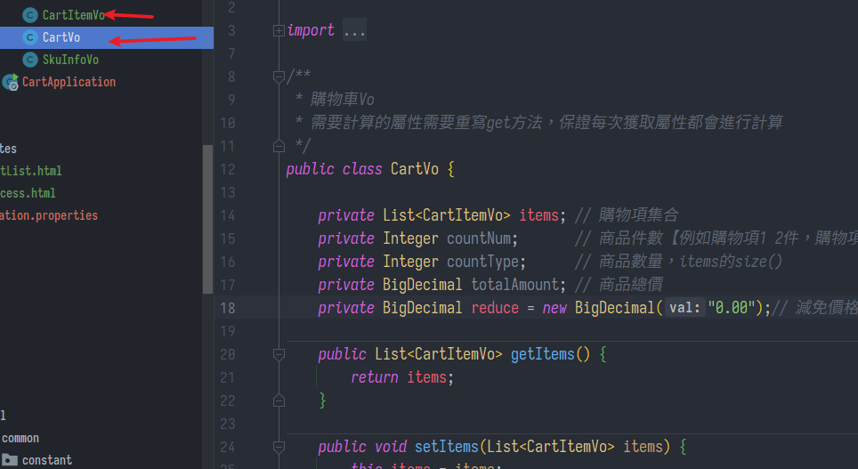
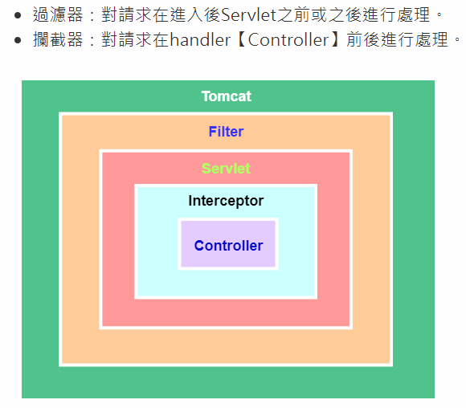

cookie&redis實現訪客購物車
SpringBoot微服務項目筆記-17
購物車需求分析
訪客購物車
沒登入也能放地購物車，是我才不搞那麼多，沒登入就讓用戶登一下不就好了，唉當練習吧
意外的是這個項目是仿京東，結果京東現在也不提供這種功能了，一律先登入再說
-
可以把資料暫存在客戶端，例如:
- localstorage
- cookie
- WebSQL
-
但何種商品被放到購物車本身是一個有價值的資訊，所以選擇放到伺服端的redis
用户購物車
- 一樣採用redis，優勢在於
- 極高的讀寫併發性能
- 好組織數據結構
- redis也有持久化策略，AOF
- 登入後會將離線購物車合併
操作分析
- 增（添加商品到購物車）
- 刪（刪除某個商品）
- 改（修改商品數量）
- 查（查詢購物車中的商品）
- 商品是否被選中，下次進來還是選中狀態
- 用户可以使用購物車多件商品一起結算下單
- 在購物車中展示商品優惠信息
- 提示購物車商品價格變化
資料庫設計
- Redis數據結構用Hash，造一個雙層Map來存
Map<String, Map<String, String>>
- 第一個key是用户id，value是購物車信息
- 第二個key是skuId，value是購物項數據
Vo設計
類似之前做的書城項目
- CartVo是完整的一台車，這邊有CartItemVo構成的List、總件數、總價
- CartItemVo略等同於Sku，就是車中的某項商品，加上件數與價格

- 在CartVo.java 將計算總價等等方法封裝起來
public BigDecimal getTotalAmount() {
BigDecimal amount = new BigDecimal("0");
// 計算購物項總價
if (!CollectionUtils.isEmpty(items)) {
for (CartItemVo cartItem : items) {
if (cartItem.getCheck()) {
amount = amount.add(cartItem.getTotalPrice());
}
}
}
// 計算優惠的價格
return amount.subtract(getReduce());
}
實作
攔截器
-
當用戶想用購物車，必須判斷是否已登入，若無登入，創造一個臨時用戶cookie:user-key
-
造一個WebMvcConfigurer配置類註冊攔截器，MallWebConfig.java
@Configuration
public class MallWebConfig implements WebMvcConfigurer {
@Override
public void addInterceptors(InterceptorRegistry registry) {
registry.addInterceptor(new CartInterceptor())// 註冊攔截器
.addPathPatterns("/**");
}
}
- 用ThreadLocal來儲存用戶的登入狀態UserInfoTo

- ThreadLocal在同一個線程內都能存取，之前學過
https://yoziming.github.io/post/220110-agg-javaweb-10/#threadlocal
- CartInterceptor.java
/**
* 在執行目標方法之前，判斷用戶的登入狀態.並封裝傳遞給controller目標請求
*/
public class CartInterceptor implements HandlerInterceptor {
public static ThreadLocal<UserInfoTo> toThreadLocal = new ThreadLocal<>();
/***
* 攔截所有請求給ThreadLocal封裝UserInfoTo物件
* 1、從session中獲取MemberResponseVo != null，登入狀態，為UserInfoTo設置Id
* 2、從request中獲取cookie，找到user-key的value，
* 目標方法執行之前：在ThreadLocal中存入用戶信息【同一個線程共享數據】
* 從session中獲取數據【使用session需要cookie中的GULISESSION 值】
*/
@Override
public boolean preHandle(HttpServletRequest request, HttpServletResponse response, Object handler) throws Exception {
UserInfoTo userInfoTo = new UserInfoTo();
HttpSession session = request.getSession();
// 獲得當前登入用戶的信息
MemberResponseVo memberResponseVo = (MemberResponseVo) session.getAttribute(AuthServerConstant.LOGIN_USER);
if (memberResponseVo != null) {
// 用戶登入了
userInfoTo.setUserId(memberResponseVo.getId());
}
Cookie[] cookies = request.getCookies();
if (cookies != null && cookies.length > 0) {
for (Cookie cookie : cookies) {
// user-key
String name = cookie.getName();
if (name.equals(CartConstant.TEMP_USER_COOKIE_NAME)) {
userInfoTo.setUserKey(cookie.getValue());
// 標識客戶端已經存儲了 user-key
userInfoTo.setTempUser(true);
}
}
}
// 如果沒有臨時用戶一定分配一個臨時用戶UUID
if (StringUtils.isEmpty(userInfoTo.getUserKey())) {
String uuid = UUID.randomUUID().toString();
userInfoTo.setUserKey(uuid);
}
// 目標方法執行之前
toThreadLocal.set(userInfoTo);
return true;
}
/**
* 業務執行之後，讓瀏覽器保存臨時用戶user-key的Cookie
*/
@Override
public void postHandle(HttpServletRequest request, HttpServletResponse response, Object handler,
ModelAndView modelAndView) throws Exception {
// 獲取當前用戶的值
UserInfoTo userInfoTo = toThreadLocal.get();
// 1、判斷是否登入；2、判斷是否創建user-token的cookie
if (userInfoTo != null && !userInfoTo.isTempUser()) {
// 創建一個cookie
Cookie cookie = new Cookie(CartConstant.TEMP_USER_COOKIE_NAME, userInfoTo.getUserKey());
cookie.setDomain("mall.com");
cookie.setMaxAge(CartConstant.TEMP_USER_COOKIE_TIMEOUT);
response.addCookie(cookie);
}
}
}
攔截器與過濾器
- 執行順序: 過濾前-攔截前-action執行-攔截後-過濾後

- 總的來說攔截器更好用一點
查看整車
- CartController.java
/**
* 去購物車頁面的請求【未登入狀態也可以查看】
* 瀏覽器有一個cookie:user-key 標識用戶的身份，一個月過期
* 如果第一次使用jd的購物車功能，都會給一個臨時的用戶身份:
* 瀏覽器以後保存，每次訪問都會帶上這個cookie；
* 登入：session有用戶的身份
* 沒登入：按照cookie裏面帶來user-key來做
* 第一次，如果沒有臨時用戶，自動創建一個臨時用戶
*/
@GetMapping(value = "/cart.html")
public String cartListPage(Model model) throws ExecutionException, InterruptedException {
CartVo cartVo = cartService.getCart();
model.addAttribute("cart", cartVo);
return "cartList";
}
- CartServiceImpl.java
- 如果登入了，要把臨時車上的合併過來並清空臨時車
/**
* 跳轉cartList頁面
* 封裝購物車類【所有商品，所有商品的價格】
* 【整合登入狀態與未登入狀態】
*/
@Override
public CartVo getCart() throws ExecutionException, InterruptedException {
CartVo cartVo = new CartVo();
UserInfoTo userInfoTo = CartInterceptor.toThreadLocal.get();
System.out.println(userInfoTo);
if (userInfoTo.getUserId() != null) {
// 1）、登入後購物車的key
String cartKey = CartConstant.CART_PREFIX + userInfoTo.getUserId();
// 2）、臨時購物車的key
String temptCartKey = CartConstant.CART_PREFIX + userInfoTo.getUserKey();
// 如果臨時購物車的數據還未進行合併
List<CartItemVo> tempCartItems = getCartItems(temptCartKey);
if (tempCartItems != null) {
// 臨時購物車有數據需要進行合併操作
for (CartItemVo item : tempCartItems) {
addToCart(item.getSkuId(), item.getCount());
}
// 清除臨時購物車的數據
clearCartInfo(temptCartKey);
}
// 獲取登入後的購物車數據【包含合併過來的臨時購物車的數據和登入後購物車的數據】
List<CartItemVo> cartItems = getCartItems(cartKey);
cartVo.setItems(cartItems);
} else {
// 沒登入
String cartKey = CartConstant.CART_PREFIX + userInfoTo.getUserKey();
// 獲取臨時購物車裡面的所有購物項
List<CartItemVo> cartItems = getCartItems(cartKey);
cartVo.setItems(cartItems);
}
return cartVo;
}
/**
* 獲取購物車裡面的數據【根據key，包裝成List<CartItemVo>】，合併臨時車用
* key=【mall:cart:2 或 mall:cart:lkajkashjghj2989dsj】
*
* @param cartKey
* @return
*/
private List<CartItemVo> getCartItems(String cartKey) {
// 獲取購物車裡面的所有商品
BoundHashOperations<String, Object, Object> operations = redisTemplate.boundHashOps(cartKey);
List<Object> values = operations.values();
if (values != null && values.size() > 0) {
List<CartItemVo> cartItemVoStream = values.stream().map((obj) -> {
String str = (String) obj;
CartItemVo cartItem = JSON.parseObject(str, CartItemVo.class);
return cartItem;
}).collect(Collectors.toList());
return cartItemVoStream;
}
return null;
}
添加至車
- CartController.java
- 添加完用redirect跳轉，防止重複提交
/**
* 添加商品到購物車
* attributes.addFlashAttribute():將數據放在session中，可以在頁面中取出，但是只能取一次
* attributes.addAttribute():將數據放在url後面
*
* @return
*/
@GetMapping(value = "/addCartItem")
public String addCartItem(@RequestParam("skuId") Long skuId,
@RequestParam("num") Integer num,
RedirectAttributes attributes) throws ExecutionException, InterruptedException {
cartService.addToCart(skuId, num);
attributes.addAttribute("skuId", skuId);// 給重定向請求用的【參數會拼接在下面請求之後】【轉發會在請求域中】
return "redirect:http://cart.mall.com/addToCartSuccessPage.html";
}
/**
* 跳轉到添加購物車成功頁面【防止重複提交】
*/
@GetMapping(value = "/addToCartSuccessPage.html")
public String addToCartSuccessPage(@RequestParam("skuId") Long skuId,
Model model) {
//重定向到成功頁面。再次查詢購物車數據即可
CartItemVo cartItemVo = cartService.getCartItem(skuId);
model.addAttribute("cartItem", cartItemVo);
return "success";
}
- CartServiceImpl.java
- 首先要在redis中開闢屬於某用戶的購物車物件，用
redisTemplate.boundHashOps()方法，Key就是UserID，為了在redis中整理方便加上前綴mall:cart: - 前面在攔截器中把userInfo存到toThreadLocal了，如果未登入則會創造臨時的，所以從裡面必定能取出一個userId
- 首先要在redis中開闢屬於某用戶的購物車物件，用
/**
* 獲取到我們要操作的購物車
* 簡化代碼：
* 1、判斷是否登入，拼接key
* 2、數據是hash類型，所以每次要調用兩次key【直接綁定外層key】
* 第一層key：mall:cart:2
* 第二層key：skuId
*/
private BoundHashOperations<String, Object, Object> getCartOps() {
// 先得到當前用戶信息
UserInfoTo userInfoTo = CartInterceptor.toThreadLocal.get();
String cartKey = "";
if (userInfoTo.getUserId() != null) {
// mall:cart:UserID
cartKey = CartConstant.CART_PREFIX + userInfoTo.getUserId();
} else {
cartKey = CartConstant.CART_PREFIX + userInfoTo.getUserKey();
}
// 綁定指定的key操作Redis
BoundHashOperations<String, Object, Object> operations = redisTemplate.boundHashOps(cartKey);
return operations;
}
- 接著實作添加，先判斷商品項是否已經在車中
- 若無，就新增，需要遠程調用獲取skuInfo與skuAttrValues，這邊複製一份使用之前設定好的線程池config來用，異步獲取資訊後一樣用allOf與get等待全部任務完成，轉JSON後存到redis
- 若已經存在，只需要修改數量
/**
* 添加商品到購物車
*
* @param skuId
* @param num
*/
@Override
public CartItemVo addToCart(Long skuId, Integer num) throws ExecutionException, InterruptedException {
// 拿到要操作的購物車信息【cartOps就相當於綁定了當前用戶購物車數據的hash】
BoundHashOperations<String, Object, Object> cartOps = getCartOps();
// 判斷Redis是否有該商品的信息
String productRedisValue = (String) cartOps.get(skuId.toString());
// 如果沒有就添加數據【遠程查詢skuId】
if (StringUtils.isEmpty(productRedisValue)) {
// 添加新的商品到購物車(redis)
CartItemVo cartItem = new CartItemVo();
// 開啟第一個異步任務
CompletableFuture<Void> getSkuInfoFuture = CompletableFuture.runAsync(() -> {
// 遠程查詢當前要添加商品的信息
R productSkuInfo = productFeignService.getInfo(skuId);
SkuInfoVo skuInfo = productSkuInfo.getData("skuInfo", new TypeReference<SkuInfoVo>() {
});
// 數據賦值操作
cartItem.setSkuId(skuInfo.getSkuId());
cartItem.setTitle(skuInfo.getSkuTitle());
cartItem.setImage(skuInfo.getSkuDefaultImg());
cartItem.setPrice(skuInfo.getPrice());
cartItem.setCount(num);
cartItem.setCheck(true);
}, executor);
// 開啟第二個異步任務
CompletableFuture<Void> getSkuAttrValuesFuture = CompletableFuture.runAsync(() -> {
// 遠程查詢skuAttrValues組合信息
List<String> skuSaleAttrValues = productFeignService.getSkuSaleAttrValues(skuId);
cartItem.setSkuAttrValues(skuSaleAttrValues);
}, executor);
// 等待所有的異步任務全部完成
CompletableFuture.allOf(getSkuInfoFuture, getSkuAttrValuesFuture).get();
// 序列化並存到redis
String cartItemJson = JSON.toJSONString(cartItem);
cartOps.put(skuId.toString(), cartItemJson);
return cartItem;
} else {
// 購物車中已有此商品，修改數量即可
CartItemVo cartItemVo = JSON.parseObject(productRedisValue, CartItemVo.class);
cartItemVo.setCount(cartItemVo.getCount() + num);
// 修改redis的數據
String cartItemJson = JSON.toJSONString(cartItemVo);
cartOps.put(skuId.toString(), cartItemJson);
return cartItemVo;
}
}
SQL CONCAT的用法
- 在第二個遠程調用skuSaleAttrValues，想要返回
機身：黑色這樣的資料格式，用CONCAT(A, "：", B)
<select id="getSkuSaleAttrValuesAsStringList" resultType="java.lang.String">
SELECT CONCAT(attr_name, "：", attr_value)
FROM pms_sku_sale_attr_value
WHERE sku_id = #{skuId}
</select>
引導至添加成功頁面
- 雖然我覺得這個功能怪怪的，誰添加成功還專門跑去看那一個品項，不應該是加了就顯示一個收過去車子的小動畫，讓用戶繼續逛同類項目嗎?
/**
* 重定向頁面獲取當前購物車中sku商品信息
*
* @param skuId
* @return
*/
@Override
public CartItemVo getCartItem(Long skuId) {
//拿到要操作的購物車信息
BoundHashOperations<String, Object, Object> cartOps = getCartOps();
String redisValue = (String) cartOps.get(skuId.toString());
CartItemVo cartItemVo = JSON.parseObject(redisValue, CartItemVo.class);
return cartItemVo;
}
刪、改
- 沒什麼特殊的，就不多貼
- 比較特別的是"選中"這個功能，也做成了一個欄位跟修改的方法去保存到redis，即使關掉重開上次選中那些都會保留
- 可是他每次更改選/不選中都發一次請求給後端然後redirect，感覺好囧，應該用ajax，這個真的太扯了
- 立意良好，但感覺有點多餘了，應該給前端做就好，也沒人care關掉下次再進到購物車選中的狀態是否跟上次一樣吧
- 下單的時候也是要根據選中那些去計算價格與生成訂單
下單前計算價格
- 這個倒是能理解，下訂單之前，以前添加到車裡的項目，價格說不定有變動，不過只查價格是不是又不夠周全，如果商品下架了呢?
- 還是說他在訂單模組才會確認這點，不管了就先這樣吧
- CartServiceImpl.java
/**
* 遠程調用：訂單服務調用【更新最新價格】
* 獲取當前用戶購物車所有選中的商品項check=true【從redis中取】
*/
@Override
public List<CartItemVo> getUserCartItems() {
List<CartItemVo> cartItemVoList = new ArrayList<>();
//獲取當前用戶登入的信息
UserInfoTo userInfoTo = CartInterceptor.toThreadLocal.get();
//如果用戶未登入直接返回null
if (userInfoTo.getUserId() == null) {
return null;
} else {
//獲取購物車項
String cartKey = CartConstant.CART_PREFIX + userInfoTo.getUserId();
//獲取所有的
List<CartItemVo> cartItems = getCartItems(cartKey);
if (cartItems == null) {
throw new CartExceptionHandler();
}
//篩選出選中的
cartItemVoList = cartItems.stream()
.filter(items -> items.getCheck())
.map(item -> {
//更新為最新的價格（查詢數據庫）
// redis中的價格不是最新的
BigDecimal price = productFeignService.getPrice(item.getSkuId());
item.setPrice(price);
return item;
})
.collect(Collectors.toList());
}
return cartItemVoList;
}
小結
攔截器
- 可以用來修飾request
- 到WebMvcConfigurer註冊，重寫preHandle或postHandle方法
- 用ThreadLocal作為同一線程的置物櫃
- 這玩意我記得用完要清，但是找不到好地方清，只能期待他的弱引用過自己清理吧
在redis添加hash
redisTemplate.boundHashOps(key)
異步任務
先自訂線程池
- application.properties
# 線程池相關
mall.thread.core-size=20
mall.thread.max-size=200
mall.thread.keep-alive-time=10
- ThreadPoolConfigProperties.java
- 這是造了一個類，應該也可以用
@values - 後來才懂原來那些框架底層就是這樣寫的封裝好了，所以在properties寫參數就能完成配置
- 這是造了一個類，應該也可以用
@ConfigurationProperties(prefix = "mall.thread")
@Component
@Data
public class ThreadPoolConfigProperties {
private Integer coreSize;
private Integer maxSize;
private Integer keepAliveTime;
}
- CustomThreadConfig.java
@Configuration
public class CustomThreadConfig {
@Bean
public ThreadPoolExecutor threadPoolExecutor(ThreadPoolConfigProperties properties) {
return new ThreadPoolExecutor(
properties.getCoreSize(),
properties.getMaxSize(),
properties.getKeepAliveTime(),
TimeUnit.SECONDS,
new LinkedBlockingDeque<>(10000),
Executors.defaultThreadFactory(),
new ThreadPoolExecutor.AbortPolicy()
);
}
}
使用
- 注入 ThreadPoolExecutor
@Autowired
private ThreadPoolExecutor executor;
- 編排CompletableFuture
- 記得傳入自定義的executor，否則會造預設的線程池
- 用同一個鍋煮菜，而非一直用新鍋
- 記得傳入自定義的executor，否則會造預設的線程池
CompletableFuture<Void> xxxFuture = CompletableFuture.runAsync(() -> {
// 任務
}, executor);
- 阻塞等待收集結果
CompletableFuture.allOf(xxxFuture, oooFuture...).get();
上次修改於 2022-02-03